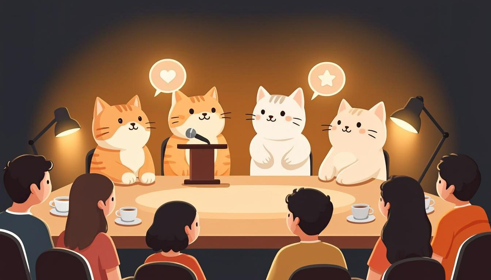

Warm-up
10 mincats · wishes · quiet Sundays🎧 Listen to the questions
❓ Three questions — click a card to open the sentence starters
Listening — The Cat Parliament
12 minaudio + comprehension
🧩 Before you listen: 10 key words
Click a word — a definition and an example will open. The Russian gloss is there to check your understanding. Listen to the recording of all ten words.
🎧 Track 1 — The Cat Parliament
🌍 Extension — BBC 6 Minute English: Our love of pets
From the yearly plan: Our love of pets ↗
Task: why do we love pets? Note 2 wish/hope phrases and any second conditional you hear. What would your pet say about your working hours — a wish about now, or a wish + would?
Reading — The Wish Wall (internal wiki)
10 minwishes + wish spottingHarbour Lights Wiki · Page 15: The Wish Wall
Category: team culture · Owner: everyone · Status: honest wishes only
The Wish Wall collects sentences that start with I wish or If only. The wall's grammar rule: label every wish with its clock — now, regret, or other people.
1. I wish patches did not change the meta every month. (a wish about now)
2. I wish I had skied more as a teenager — the legs forget, the fear does not. (a regret)
3. If only the launcher remembered my password. (now, and stronger than wish)
4. I wish the cats would stop walking on the demo machine five minutes before the stream. (other creatures' behaviour)
5. I wish I had automated the regression tests in spring. (a classic QA regret)
6. I would rather build one honest puzzle game than three trendy shooters. (a choice, not a wish — but it lives on the wall)
🌍 Extension — National Geographic: Animals
From the yearly plan — pick any cat-related piece: nationalgeographic.com/animals ↗
Task: retell 3 facts, then add one wish: I wish house cats could… — and explain what would change if the wish came true. (That last sentence is a second conditional — say it on purpose.)
Grammar — wish / if only / would rather
10 minthree clocks + 4 exercisesWISH — the two time machines from Lesson 21–22, wearing a wish
- wish + Past Simple = a wish about now: I wish I had more time. I wish the launcher remembered my password.
- wish + had V3 = a regret about the past: I wish we had launched in spring. I wish I had automated the tests.
- If only = the same grammar, but louder and more emotional: If only I had twice the budget!
- The time moves one step back: now → past simple, yesterday → had V3. The past is distance, not a clock.
😤 wish + WOULD and 🤝 WOULD RATHER
- wish + would = irritation about someone else's behaviour you want to change: I wish my cat would stop meowing at 5 a.m.
- Not about yourself: say I wish I had…, never ~~I wish I would~~.
- would rather + infinitive without to = a polite choice: I would rather build a puzzle game than a shooter.
- Short answers live here too: Which shift? — I'd rather take mornings.
⚙️ Mini-table — which clock is it?
| Sentence | Why? |
|---|---|
| I wish patches did not change the meta. | True right now (they do change it) → wish + past simple → a wish about now. |
| I wish I had skied more as a teenager. | Finished past that cannot change → wish + had V3 → a regret. |
| I wish the cats would stop sitting on the demo machine. | Someone else's behaviour, wanted different → wish + would. |
| I wish I would stop skipping the tutorial. | Wrong — wish + would is not used about yourself: I wish I stopped… (or: I wish I didn't skip…). |
| If only the launcher remembered my password. | if only = wish, but emotional → a wish about now. |
🎬 Video — BBC Learning English: How to use 'wish' (English In A Minute)
🔊 Shadowing — speak along with the speaker
Track A — wishes about now and regrets, Track B — wishes about other creatures and choices. Listen to a sentence → repeat it out loud in the pause. Two loops per track.
Grammar → Speaking — the main section of the lesson
15 mingoal: wishes that sound honest, not translated🎙 Round 1 — Wish Wall 6 wishes
Six wishes, different clocks: two about work, one about cats, one about skiing or sport, one about Marvel, one free. Model: I wish patches did not change the meta; I wish I had skied more as a teenager. Label each clock out loud. 2 minutes.
🎙 Round 2 — Cat Parliament your cats' complaints
Present the complaints of your cats (real or imagined) through wish + would: The cats wish I would stop taking calls on the balcony; they wish the keyboard were heated. At least four complaints. 90 seconds.
🎙 Round 3 — Regret to Plan (the plan's core drill)
Take 3 regrets and turn each into a plan for the future — the wish names the past, the plan owns the future: I wish I had automated testing → So now I will hire a QA lead. Six sentences total, recorded as one story.
⚡ Speed Drill — a wish every 5 seconds
Open a card and instantly say the wish it hides — out loud, with the right clock.
Writing — a letter to your past self
5 min5 sentences, 40–80 wordsModel answer — open it after your own version
Dear me, one year ago. I wish you had started the portfolio in March, not September. I wish you had automated the regression tests before the winter update — the launch would have been calmer. I wish you would stop promising Friday deadlines to publishers: they believe you. Start English earlier; the interviews will thank you. And take the ski trip — the legs forget, the fear does not. Your future self ships on time now, and the cats sleep on the warm keyboard.
Homework
≤ 30 minutes in total🧑🏫 Teacher notes
Goal: the student separates the three wish-clocks automatically — past simple for now, had V3 for regrets, would for other creatures' behaviour — and uses would rather for polite choices without the stray to.
Suggested flow: Warm-up: what the cats misunderstand about work; push every answer into "I wish…" → Listening: the cat parliament; second pass copies one wish per clock → Reading: the Wish Wall labels six sentences; the NatGeo extension adds a second-conditional tail → Grammar: the mini-table's "which clock?" rows decide everything; the one-minute video consolidates → Speaking: Round 3 (regret to plan) is the module's key drill — the wish names the past, the plan owns the future → Writing: the letter to your past self is the third portfolio artefact; keep it for the graduation lesson in Module 12.
Success criteria: Round 1 — 6 wishes, all three clocks used and labelled; Round 2 — four complaints with wish + would or wish + past; Round 3 — three regret→plan pairs with a real first step in each plan.
Error pocket: present after wish (I wish I have) · would have after wish for regrets (I wish I would have listened) · wish + would about yourself · would rather to build · mixing if only with if-conditions (if only starts a wish, not a condition).
Threads: the six wishes from Round 1 are the student's homework lines — Lesson 24 opens by reciting them; the heated keyboard returns in Lesson 24's debate as the "quality of life" argument; regret to plan is the exact move the final pitch in Module 12 will reuse ("what I would have done differently — and what I will do now").